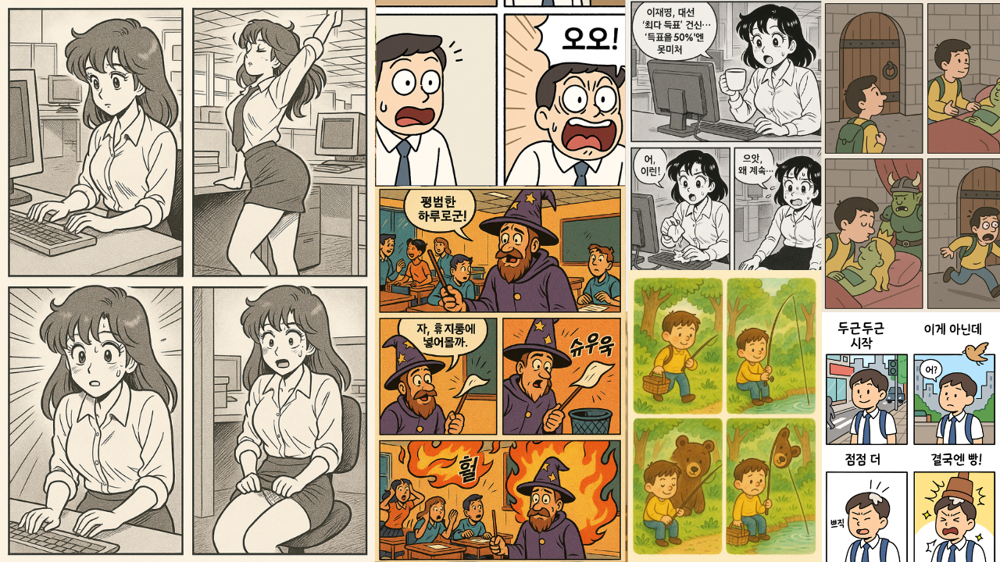

아래 항목들을 선택하거나 입력하고 '생성!' 버튼을 누르면, 재미있는 4컷 만화 아이디어와 함께 AI 이미지 생성 도구(Midjourney, DALL·E 등)에서 사용할 수 있는 상세 프롬프트가 만들어집니다.
모든 항목은 '랜덤 생성'으로도 채울 수 있어요!

💡 이렇게 활용해 보세요!
| * 만약 대사가 중요하고 글자 깨짐이 심하다면, 프롬프트에서 '한글 대사 포함' 규칙을 제거하고 그림만 생성한 후, 별도로 대사를 추가하는 것을 권장합니다.
| *'만화 주제/핵심 아이디어'를 구체적으로 입력하면 더욱 원하는 방향의 만화를 만들 수 있습니다.
| *'전체 랜덤 생성' 버튼으로 예상치 못한 재미있는 아이디어를 발견해 보세요.
| *생성된 아이디어와 프롬프트를 바탕으로 Midjourney, DALL·E, Stable Diffusion 등에서 멋진 4컷 만화를 직접 그려보세요!
| *캐릭터 특징을 고정하면 모든 컷에서 동일한 캐릭터가 등장합니다.
| *이미지 생성 AI에 따라 프롬프트의 효과는 다를 수 있습니다. 필요시 프롬프트를 수정하여 사용하세요.
| *AI가 생성하는 이미지의 한글 대사는 완벽하지 않을 수 있습니다. 글자가 깨지거나 어색하게 나올 경우, 이미지 편집 도구를 사용하여 직접 수정하시거나, 대사 없이 그림만 참고하여 활용해 보세요.
| *때로는 동일한 프롬프트로 여러 번 생성하면 더 나은 결과를 얻을 수도 있습니다.